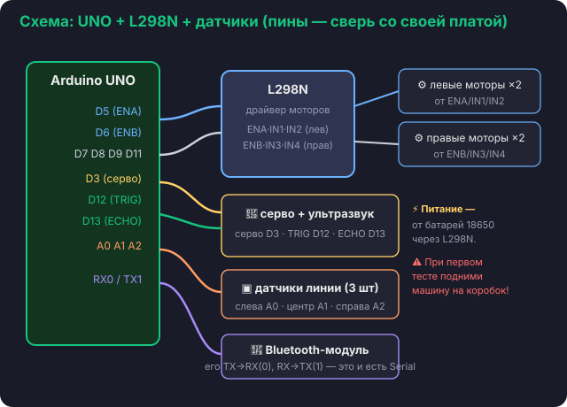

Цель урока
Подключить моторы к драйверу L298N, залить простой скетч — и машина впервые поедет
(вперёд 2 секунды и стоп). Это «первая жизнь».
🔌 Подключаем моторы к L298N
Драйвер L298N — это «мускулы». У него два канала: один на левые моторы, другой
на правые. Каждый канал управляется тремя пинами Arduino:
ENA и ENB — скорость (0…255, через analogWrite);
IN1, IN2 — направление левых моторов;
IN3, IN4 — направление правых моторов.

⚠️ Пины зависят от твоей платы
В наборе провода часто уже разведены под определённые пины. Сверь номера пинов на схеме с
реальной платой и инструкцией Elegoo. В нашем коде по умолчанию: левые
ENA=5, IN1=7, IN2=8, правые ENB=6, IN3=9, IN4=11.
🚀 Заливаем проверочный скетч
Открой drive_test.ino в Arduino IDE (плата «Arduino UNO»),
выбери порт и нажми «Загрузить». Внутри всё просто:
// едем вперёд: оба мотора крутятся «вперёд»digitalWrite(IN1, HIGH); digitalWrite(IN2, LOW);
digitalWrite(IN3, HIGH); digitalWrite(IN4, LOW);
analogWrite(ENA, 200); // скорость левыхanalogWrite(ENB, 200); // скорость правыхdelay(2000); // 2 секунды
⚠️ ПОДНИМИ машину на коробок!
Перед заливкой поставь машину на коробок/книжку, чтобы колёса крутились в воздухе. Иначе
она уедет со стола. Включи питание машины (батареи) — без него моторы не поедут.
💡 Машина едет криво или назад?
Если колёса крутятся не туда — поменяй местами два провода этого мотора на L298N (или поменяй
HIGH/LOW в коде). Это нормальная настройка, у всех бывает.
✅ Проверка
Машина проехала вперёд ~2 секунды и остановилась. Все 4 колеса крутятся в нужную сторону.
Получилось? Теперь передадим управление Python.
💡 Это единственный «сырой» скетч в курсе
Он нужен только чтобы убедиться: моторы и драйвер L298N живые. Дальше мы больше не программируем
Arduino — на следующем уроке зальём готовую прошивку Firmata и всем будем управлять из Python.
🧠 Проверь себя
Выбери ответ. Ошибёшься — 30 секунд на то, чтобы вернуться в урок и перечитать.
Что такое драйвер L298N?
✅ У него два канала — на левые и правые моторы. ENA/ENB — скорость, IN1…IN4 — направление.
Что сделать ПЕРЕД заливкой проверочного скетча?
✅ Иначе машина уедет со стола. И не забудь включить питание машины — без него моторы не поедут.